チームは速いペースでリリースを重ね、コードの多くをAIが書いています。デザインの土台がないまま速度だけが上がると、プロダクトは動いても、一つの会社がつくったものには感じられません。Raft Designは、その差を4週間で埋めます。まずブランド、次にそれを体現するプロダクトです。
なぜ3週間ではなく、4週間なのか。多くのスプリントは、ブランドかプロダクトのどちらかに集中します。このスプリントでは、両方を、成果につながる順序でつくります。
01
方向性の定義 — 第1週
ポジショニング、ターゲット、そしてすべての起点となるデザイン基盤を定めます。
02
ブランド — 第2週
書体、配色体系、言葉づかいを一貫したブランドの仕組みにまとめます。投資家へのプレゼンテーションに使える資料テンプレートも整えます。
03
プロダクト — 第3週
第2週に築いた仕組みをもとに、細部まで設計した5〜10画面と、操作できるプロトタイプを制作します。例外的な操作や状況への対応も整理します。
04
システム化 — 第4週
デザイントークンで管理するコンポーネントライブラリ、実装に必要なドキュメント、開発チーム向けの説明動画を用意します。担当者がその場にいなくても、チームが自分たちで開発を進められる状態にします。
Nasdaqへの上場。HPEやTecsysによる買収。そして、何年も事業を続け、成長を重ねる企業。早い段階から私たちに仕事を任せてくださった方々の声をご紹介します。
LegalOn
現在進行中のプロジェクト · 累計調達額2億米ドル超
「Lanceは、米国で生まれたLegalOnのブランドを、日本の文化的な文脈に自然につなげてくれました。彼が構築したブランド体系とフレームワークによって、私たちの核となる『ON』という考えを明確に表現できるようになりました。プロダクトが増えても、ブランドとしての一貫性を保つことができています。」
— Rin Yano, Chief Design Officer, LegalOn
Cloud Cruiser
2017年、HPEが買収「LinkedInではLanceを高く評価できる項目は3つまでですが、実際にはすべてに当てはまります。優れた成果、親しみやすさ、専門性、費用に見合う価値、納期の厳守、誠実さ、そして創造性。そのすべてを兼ね備えた人に出会うことは、めったにありません。」
— Karla Haley, Director of Demand Generation, Cloud Cruiser
Health Catalyst
2019年、Nasdaq上場 · 売上高約2億9,200万米ドル「Lanceと彼のチームは、当社の新しいブランドアイデンティティの立ち上げを見事に支えてくれました。ブランド刷新の戦略から、全面的にリニューアルしたWebサイトや各種資料のクリエイティブ制作まで、彼自身がプロジェクトのあらゆる面に直接関わってくれました。」
— Dan Burton, 当時のCEO
OrderDynamics
2018年、Tecsysが買収「Lanceのチームと初めて仕事をしたのは、OrderDynamicsのWebサイトリニューアルでした。その仕事が素晴らしかったので、LeadspaceのWebサイトリニューアルでも声をかけました。提案依頼書をもとに複数の制作会社を比較しましたが、Lanceのチームは、クリエイティブの力と、見込み顧客の獲得に特化したB2Bサイトのデザイン経験で際立っていました。」
— Kylee Hall, Director of Product Marketing, OrderDynamics / Leadspace
Leadspace
現在も事業を継続し、リリースを重ねています「Lanceと彼のチームは、Leadspace.comのリニューアルで素晴らしい仕事をしてくれました。先進的なデザインのおかげで、競争の激しい予測分析市場でも存在感を示せています。一緒に仕事をしやすく、こちらの要望にも根気強く応じながら、明確で丁寧なデザインの考え方で導いてくれました。」
— Damon Waldron, Director of Demand Generation, Leadspace
時間単位の請求も、際限のないスコープの拡大も、若手への丸投げもありません。経験に裏打ちされた判断を、固定料金で。4週間で成果にします。
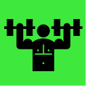
Core
すでにある程度のデザイン基盤があるチームに。投資家や初期顧客に示せるブランドの仕組みと、動きを確認できるプロダクトを整えます。成熟したプロダクト全体を設計する前の段階に適したプランです。
含まれるもの28,000米ドル
着手時50% · 納品時50%
スプリントを予約する →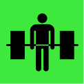
Full System
ほぼゼロから基盤を整えるチームに。ブランドの仕組み全体と、より広い範囲のプロダクト体験を設計します。主要な数画面にとどまらず、アプリ全体の開発を進められるよう、開発チームに引き継げる状態まで整えます。
含まれるもの34,000米ドル
着手時50% · 納品時50%
スプリントを予約する →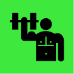
スプリント終了後
Land & Expand
専任を採用せずに、ブランドとプロダクトの取り組みを継続したいチームに。週15時間程度の継続契約で、デザインリーダーとしてチームに参画します。
月額10,000米ドル
現在、事例としての公開にご協力いただける企業を対象に、件数を限定してスプリントを受け付けています。早期にお申し込みいただく場合は、そのご協力を契約条件に反映します。

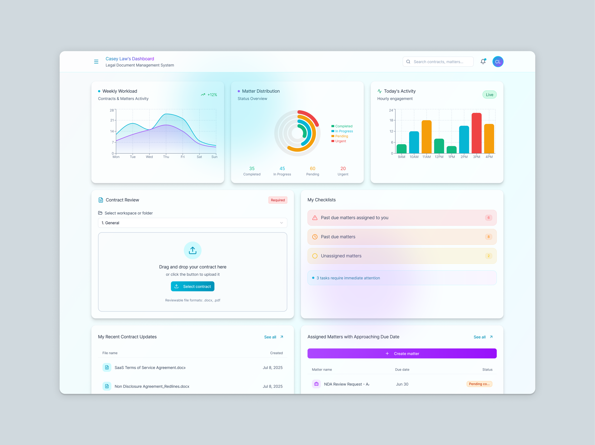
LegalOn
ブランド＆プロダクト
プロジェクトを見る →


Walmart
AIショッピング体験
プロジェクトを見る →


Adobe Express Photos
ゼロから立ち上げたAIプロダクト
プロジェクトを見る →
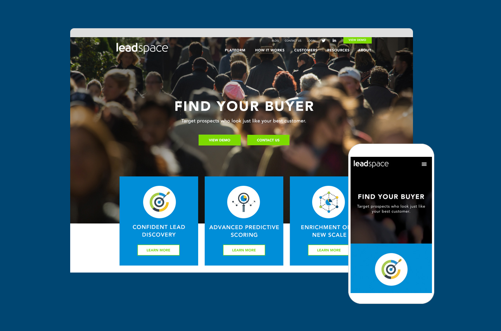
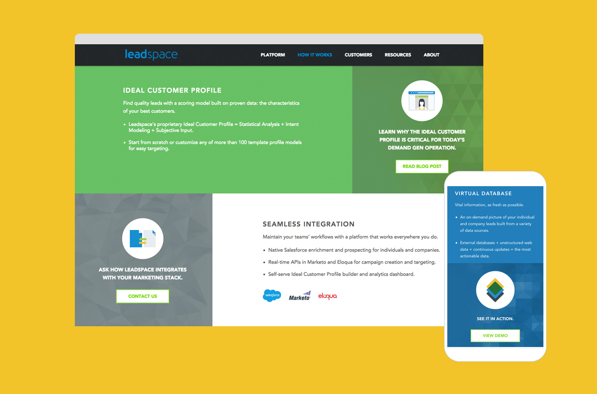
Leadspace
B2Bサイトのリニューアル
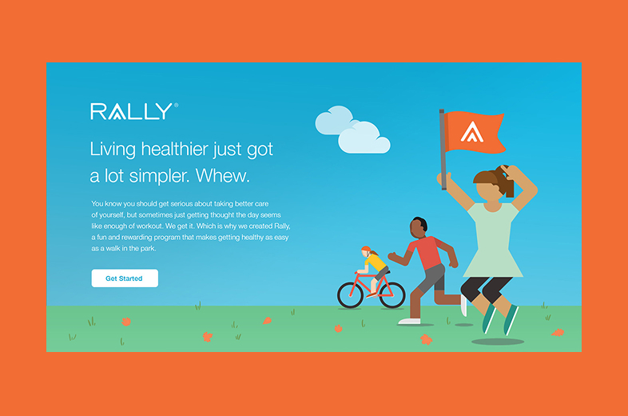
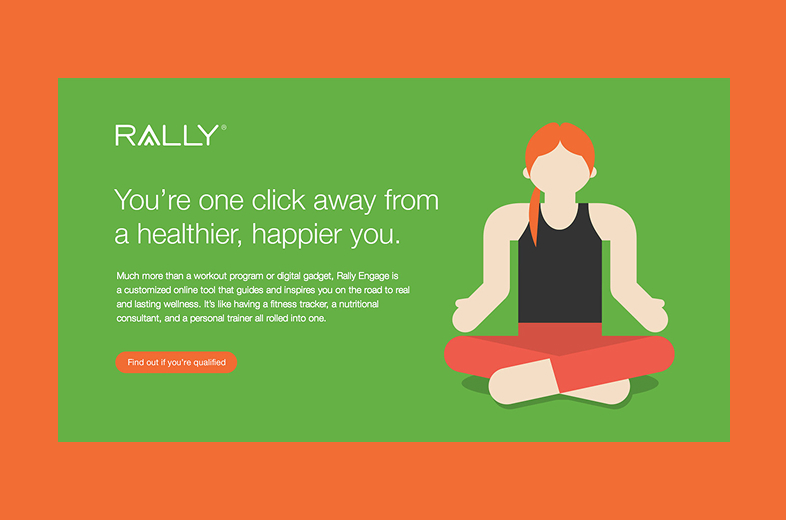
Rally Health
一般消費者向けヘルスケアプラットフォーム
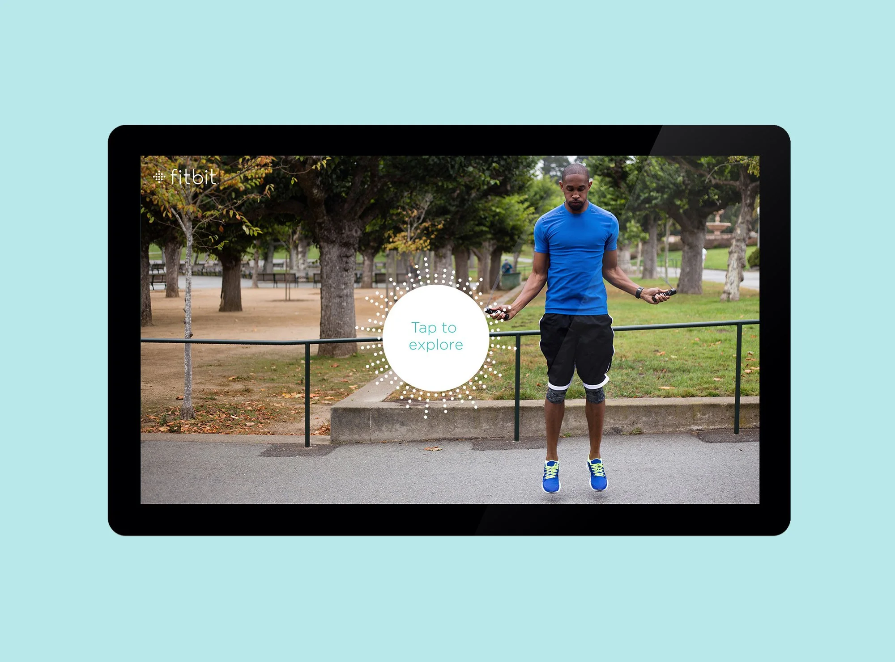
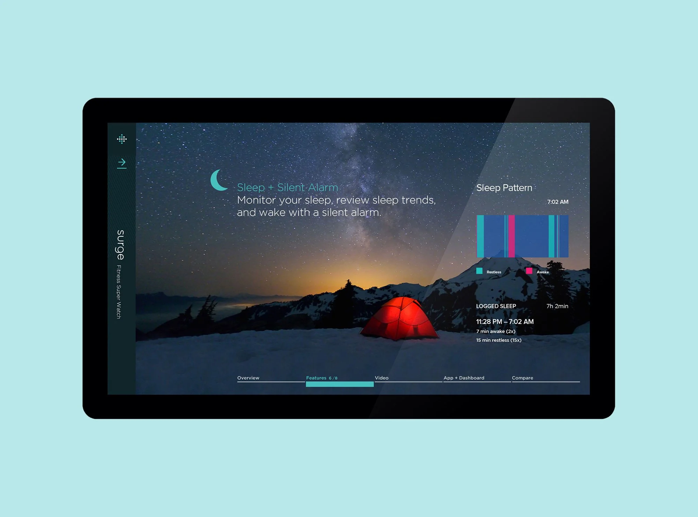
Fitbit
店頭向けiPadアプリ
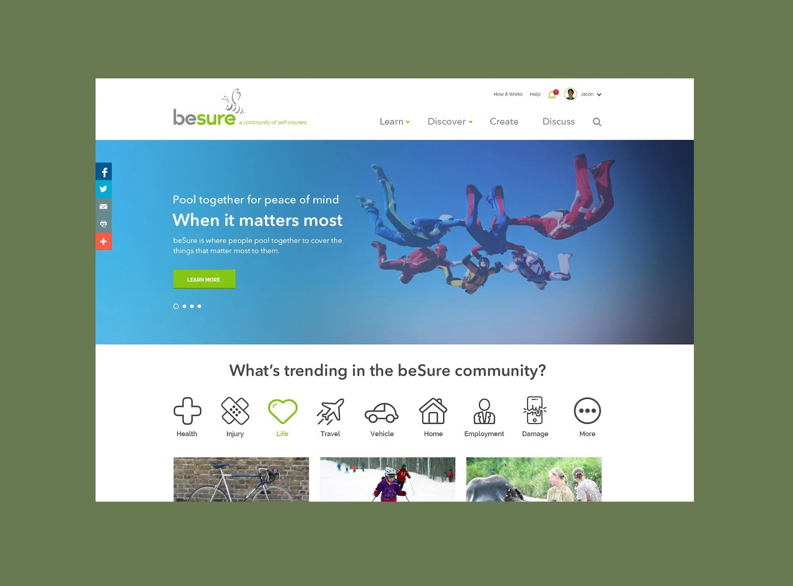
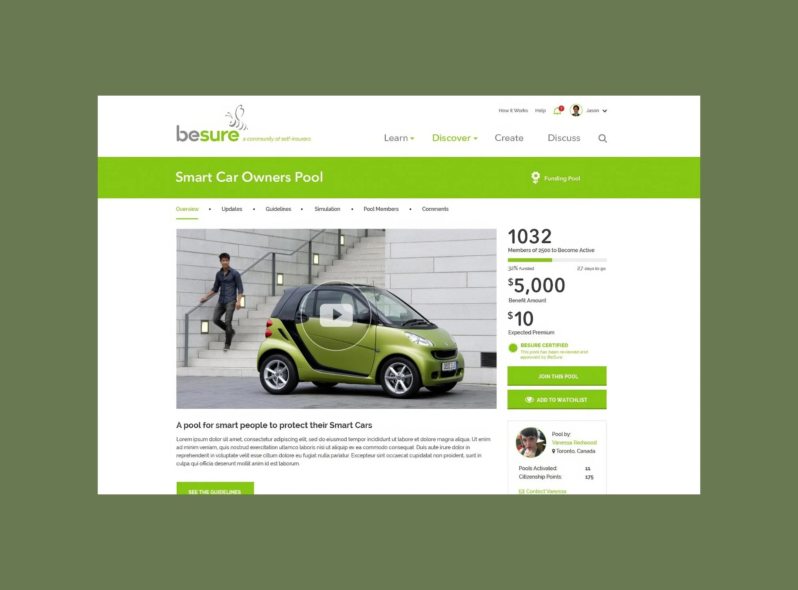
Besure
クラウドファンディング型保険


すべてのスプリントに、AIが活用できるデザインシステムが含まれます。Figmaファイルに加え、ブランドルール、トークン、コンポーネント、DESIGN.mdを整備。スプリントが終わった後も、チームとAIツールの両方が使い続けられる基盤を残します。
仕組みを見る →AdobeやWalmartの規模でデザインを率いてきた担当者と、直接仕事を進められます。若手の外部スタッフに任せることはありません。また、単発の制作物ではなく、ブランドとプロダクトを一体で支える仕組みを納品します。
Full Systemは、資金調達済みスタートアップの多くが必要とする主要画面をカバーします。より広い範囲の設計が必要な場合は、初回相談後に個別にお見積もりします。
はい。Raftは米国と日本を拠点に、日本語と英語の両方で仕事を進めています。
納品したデザインや仕組みをもとに、自社チームで開発を進めることができます。継続的なデザインリーダーシップが必要な場合は、Land & Expandの継続契約に移行し、リリースを重ねていくこともできます。
通常、初回相談のご予約から4週間以内に開始します。時期は稼働状況によって異なります。直近の開始可能日については、ご相談ください。
はい。詳しいお話を伺う前に、秘密保持契約（NDA）を締結できます。ご希望をお知らせください。
AIツールは強力ですが、どの選択が自社の事業に適しているかまでは判断してくれません。Raftが提供する価値は、AIを使うこと自体ではなく、20年の経験に基づいてAIを使いこなす判断力です。何をつくるべきか、仕上がりをどう見極めるか、どうすればそこに速く到達できるか。その方向づけがなければ、AIは良い判断と同じ速さで、当てずっぽうの判断も加速させます。
このスプリントは、期間と範囲を定めた単発のプロジェクトで、ブランドとプロダクトの基盤をゼロから構築します。AI対応デザインシステムは、すでに仕組みがあり、それをチームとAIツールが直接活用できる形に再構成したい企業向けのサービスです。資金調達済みスタートアップの多くは、スプリントから始めています。
対象は、資金調達を終え、エンジニアリングチームがすでに開発を進めているものの、ブランドやプロダクトがまだそれに追いついていないスタートアップです。
以下のフォームからブリーフをお送りいただければ、48時間以内にスコープと工程表をお戻しします。先に直接お話ししたい場合は、30分のご相談を予約してください。
対象は、エンジニアリングチームがすでに開発を進めているものの、ブランドやプロダクトがまだそれに追いついていないポートフォリオ企業です。
対象企業を教えてください。こちらから直接ご連絡します。